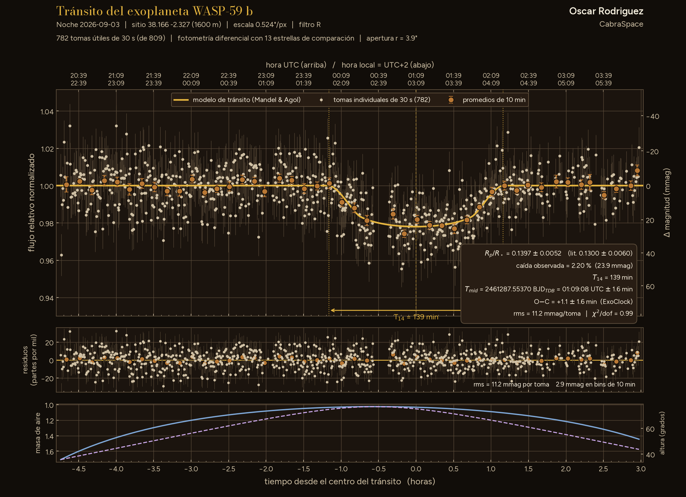

Tabula II · Lám. IV · Curva de luz · una noche
Tránsito de WASP-59 b
Curva de luz del tránsito del exoplaneta WASP-59 b, medida desde el observatorio AstroCamp.

WASP-59 b, publicado en 2013, da una vuelta a una enana K5 cada 7,9 días1. Es un júpiter templado2 de 0,86 masas y 0,78 radios de Júpiter, probablemente con un núcleo grande y denso1. Su literatura cabe en pocas líneas3: dos medidas del ángulo entre su órbita y el giro de la estrella dan 16° y −1°, con errores de casi 20°; la segunda se considera compatible con una órbita alineada2, 4. Gaia le encontró además una estrella compañera a unas 9500 unidades astronómicas5. Mi tránsito, centrado el 4 de septiembre a la 01:09 UTC, llegó 1,2 min tarde6, 7.
Resultado parcial. La hora central del tránsito vale para el O−C; la profundidad no, porque hubo volteo de meridiano en mitad del tránsito.
Hecho conCabraTransit · Fotometría de tránsitos de exoplanetas, del FITS a la curva de luz. En el taller: aún sin publicar.
- Planeta
- WASP-59 b
- Noche
- 3 · IX · 2026
- Filtro
- R
- Tomas
- 809 × 30 s
- Rp/R★ medido (orientativo)
- 0.1373 ± 0.0054 (estad.) ± 0.0114 (sist.)
- Rp/R★ publicado
- 0.1300 ± 0.0060 (Hébrard et al. 2013, vía Knudstrup et al. 2024)
- (Rp/R★)² (orientativo)
- 1.88 % (medida) vs 1.69 % (literatura)
- Duración prevista
- 162 min
- Centro del tránsito
- 4 · IX, 01:09:16 UTC ± 1.7 min
- O−C
- +1.2 min (ExoClock)
- Telescopio
- Celestron C9.25
- Lugar
- AstroCamp · 1600 m
Referencias
- 1Hébrard, G. et al. (2013). «WASP-52b, WASP-58b, WASP-59b, and WASP-60b: four new transiting close-in giant planets». A&A 549, A134. arXiv:1211.0810 Publicado
- 2Knudstrup, E. et al. (2024). «Obliquities of exoplanet host stars: 19 new and updated measurements, and trends in the sample of 205 measurements». A&A 690, A379. arXiv:2408.09793 Publicado
- 3Búsqueda en la API de arXiv, 12-11-2026: abs:"WASP-59b" devuelve 2 resultados (el descubrimiento y [4]); abs:"WASP-59", ninguno. export.arxiv.org Base de datos
- 4Zak, J. et al. (2025). «Stellar obliquities of eight close-in gas giant exoplanets». A&A 694, A91. arXiv:2501.05615 Publicado
- 5Fontanive, C. & Bardalez Gagliuffi, D. (2021). «The Census of Exoplanets in Visual Binaries: population trends from a volume-limited Gaia DR2 and literature search». Frontiers in Astronomy and Space Sciences 8, 625250. arXiv:2101.12667 Publicado
- 6Datos propios: esta lámina.
- 7ExoClock, base de datos de planetas: WASP-59 b, T0 = 2459695,71571 BJD_TDB y P = 7,9195883 d; 93 observaciones (90 de su red) y 1 tiempo de la literatura. exoclock.space Base de datos